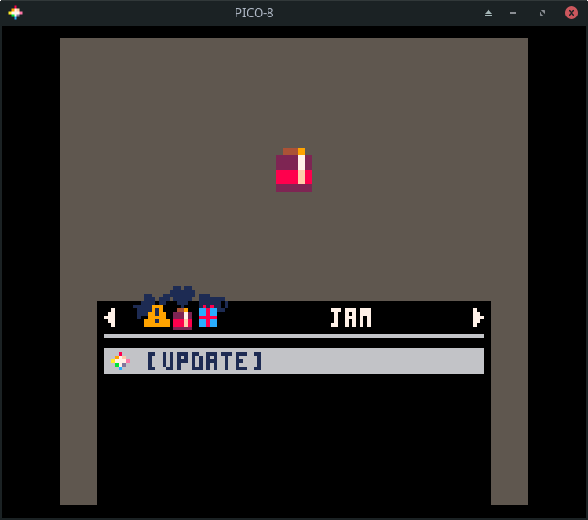
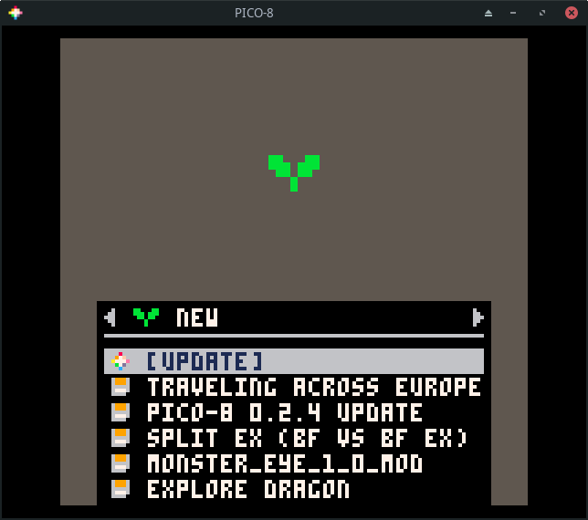
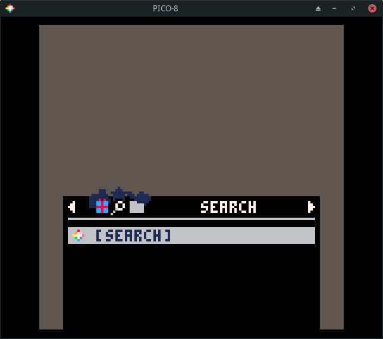
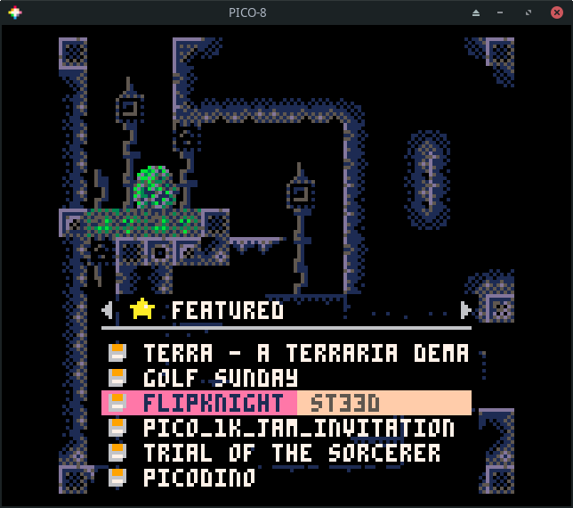
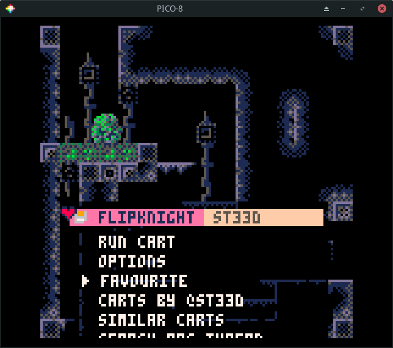
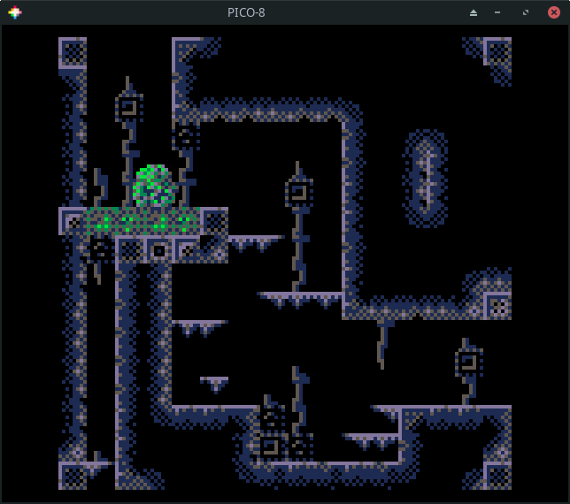

Splore
The command splore is used to launch an in-process game browser. The splore
tool provides several updatable game lists.
This first of these is the favorites view. It will be empty to start.
Whenever you select a cart, you have the option to tag it as a favorite so it
shows up here.

Pressing the R arrow takes you to the Game Jam section. These are carts
created during Game Jams which are time limited competitions where
participants write a game using a common theme as inspiration.

Press R to see a list of randomly chosen games. If you are tired of going
through the featured list, this is sometimes a good way to find something new.

Press R again to go to a list of new games. These are the most recent
community uploads. The quality of the games in this list is going to be hit or
miss. Not all of them will be complete.

Press R again to see my favorite list, the featured list. These are
usually very high quality games or demos that highlight what is possible using
PICO-8. My kids greatly enjoy going through this list and playing the games
that catch their eye.

The next section is one that lets you search for games. This is helpful if you have a particular game you are trying to find or want to see what the community has made on a specific topic.

The final section lets you browse your local files. These are the same files
you will see by running ls from the command prompt.

Browsing Games
Let's go back to the featured list. Press enter to update the list. This
requires Internet access! It will data about a number of games.
If you don't have Internet access, run the install_demos command to install
and run a few demo carts.

Use the arrow keys to navigate the list.

If you press enter on a game, you will have the option to run or favorite
the game.

Choosing run will start the game. Most games give show a title screen and
main menu. Some, like flip knight do not. Nearly all games can be controlled
using a combination of the arrow keys and the action keys (z and x). z maps to
X and x maps to O. When in doubt, just start pressing the action keys to
see what happens!

Press esc and choose exit to splore if you want to exit the game.